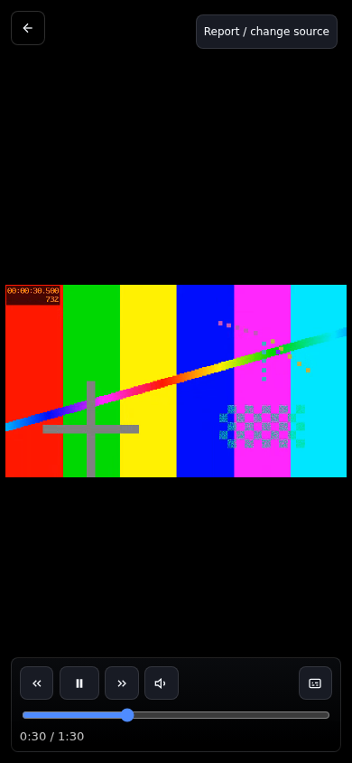
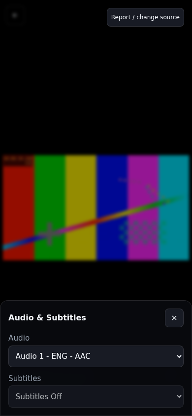

Mediastorm · synthetic validation fixtures
Personal profile area
One personal entry to existing Continue Watching, My List, Loved Titles and custom lists. Loved Titles reads the existing explicit preferences and keeps current profile restrictions. No second favorites dataset is created.
8,151 passedGo cases, including subtests · 101 test packages
29 explicit test skips; 21 packages without runnable tests
750 passedCore, TV and phone unit tests
12 new personal-area/preview regressions; both APKs built
6 API checksExecuted through Chromium against the real demo app
Fresh/upgrade PostgreSQL and race checks also pass
This page presents recorded validation evidence. The browser requests exercise the actual authenticated loved-title API. Screenshots below show the existing web playback regression with generated media. They do not show native Compose personal-area controls, which still need physical-device focus and accessibility acceptance.
What the application verified
- The Loved view contains only this profile's Love preferences and forwards its private/no-store cache directive.
- Foreign profiles, PIN-locked profiles and conflicting selectors are rejected.
- Favorites delivered to another owned device remain editable there.
- Kind filtering and bounded paging retain the existing list transport.
- Dislike and clearing a preference remove the title from the view.
- History, progress, watchlist, hidden titles, settings and starting interests remain unchanged.
- The inherited actual web login, PIN, generated-media playback and narrow track-sheet checks also pass.
Actual desktop playback
 Generated H.264/AAC fixture in the real web player. The catalogue title is demo metadata; the picture is a generated test pattern.
Generated H.264/AAC fixture in the real web player. The catalogue title is demo metadata; the picture is a generated test pattern.
Actual phone-sized playback and track selection

390-pixel viewport after seeking and resuming. The track sheet has closed and finished its transition.

The real Audio & Subtitles sheet, opened through the player button and checked against the viewport bounds.
Scope and remaining acceptance
The demo lacks external metadata/provider keys, producing the documented top-ten and movie-detail errors. Generated cached media still plays. This does not establish real Usenet cold-start performance or p95 latency. Curated child profiles retain their restrictions; external history/rating import and write synchronization remain off. The new native entry is initially unavailable for child profiles. This is the first grouped list entry, not a complete Home redesign or reminder/new-episode aggregate. Native device rendering and a separate Watch web-client personal entry remain outstanding.
All fixture accounts and media inputs are synthetic. The artifacts contain no private playlist or credentials. These checks did not deploy to production or merge upstream.